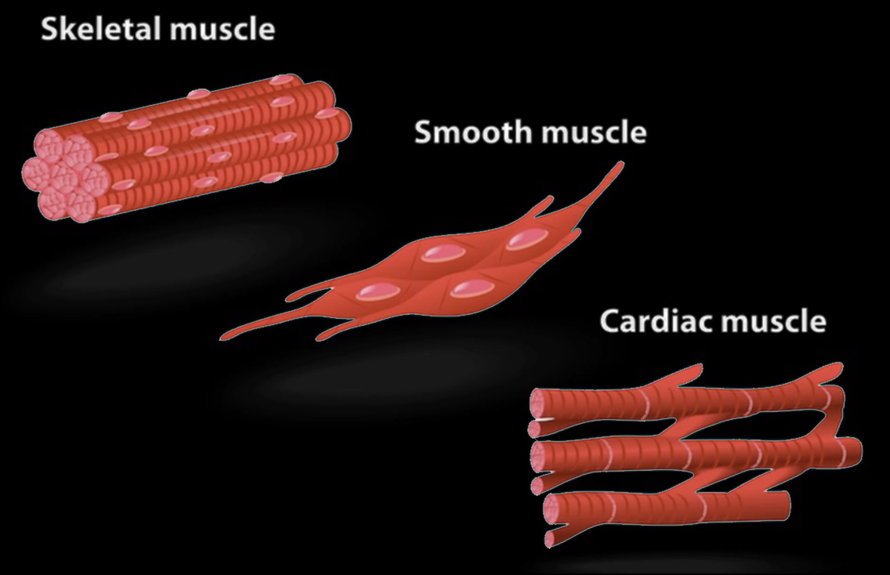
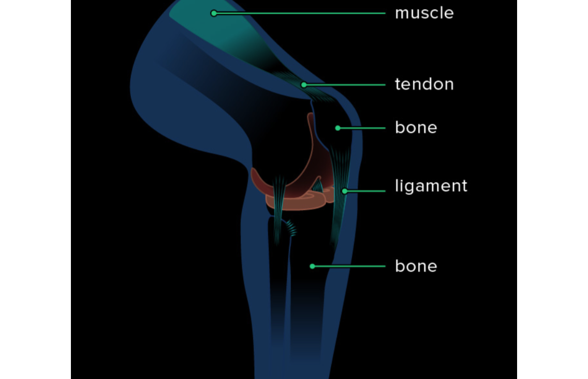
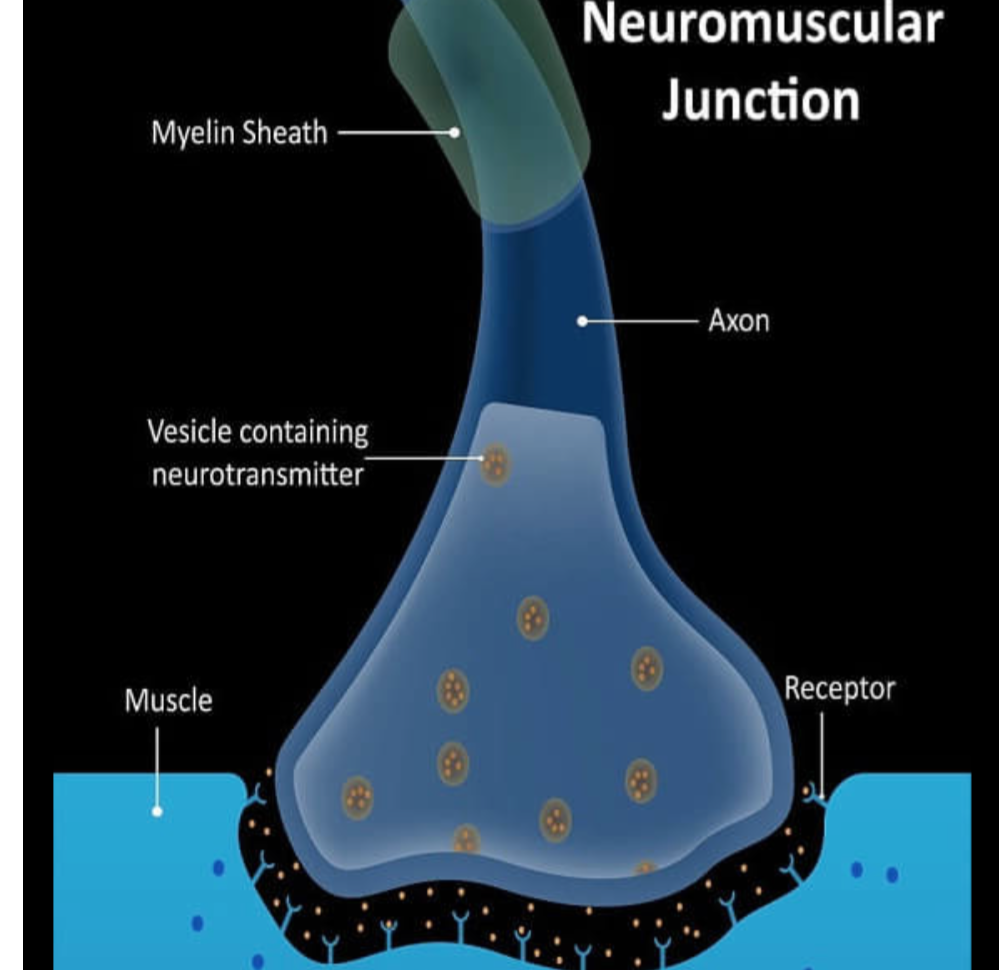
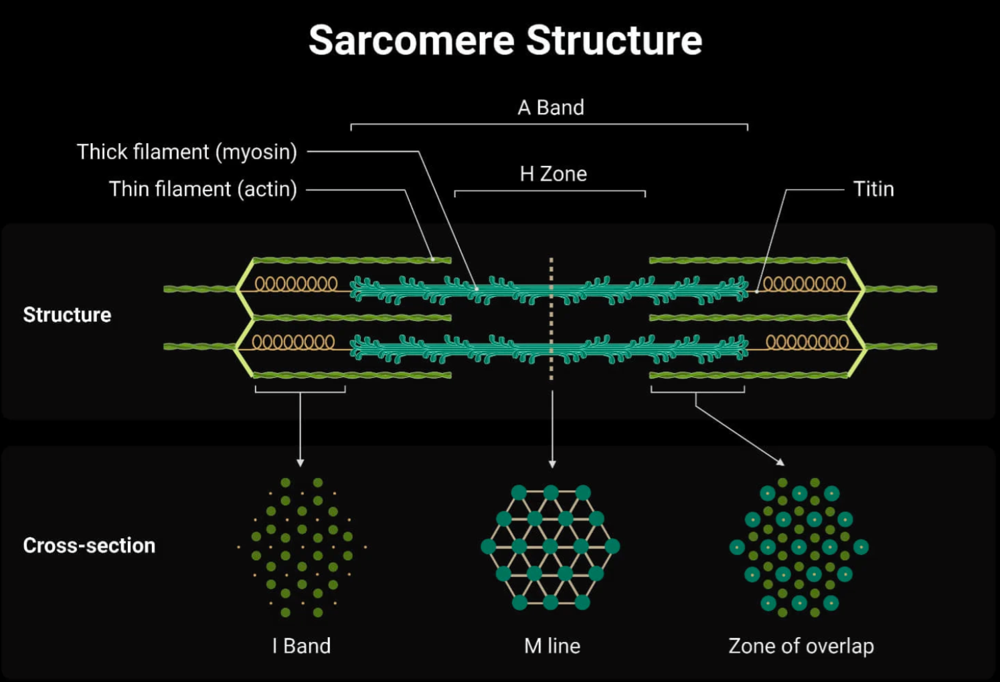

The muscular system is responsible for conducting movements, posture, and internal bodily functions.
Types of muscle:
- Skeletal: Voluntary (under conscious control), striated (with alternating light and dark bands), the only type of muscle that is multinucleated (has multiple nuclei), found attached to bones and joints to allow for a wide range of movement.
- Cardiac: Involuntary (unconscious), striated, mononucleated (one nucleus) contain intercalated discs (gap junctions allowing for rapid transmission of of impulses between cells so they beat in unison).
- Smooth: Involuntary, non-striated, found in GI tract (able to contract via peristalsis), mononucleated, endothelium of blood vessels, etc.
Notice the striations, nucleation, and intercalated discs:

Tendons, ligaments, and joints:
- Tendons → connect muscle to bone
- Ligaments → found around joints, connecting them to bones limiting excess movement
- Joints → allow for movement by connecting joints

Hypertrophy vs atrophy:
- Hypertrophy → muscles growing larger (due to increased physical strain and activity)
- Atrophy → muscles growing smaller (due to starvation or sedentary lifestyle)
Neuromuscular Junction (NMJ):
- Motor neuron → neuron responsible for transmitting impulse to the muscle cell
- Muscle fiber → contracts when impulse is received
- Neuromuscular → Acetylcholine is the neurotransmitter released by motor neurons to trigger a contraction in the respective muscle fiber

Contractions, relaxations, flexions, extensions:
- Contractions → shortening a muscle; generates tension; triggered by nervous system signal
- Relaxing → returning to original length; when nervous system signal ceases
- Note that both processes require ATP
- Flexion → bending (decreasing the angle between two adjacent bones at a joint)
- Extension → straightening (increasing the angle between two adjacent bones at a joint)
Myosin, actin, troponin, and tropomyosin:
- Myosin → thick filament; binds to actin to generate movement; uses ATP to generate force
- Actin → thin filament; globular; gives myosin tracks to move along
- Troponin → binds to tropomyosin to move it and expose actin to myosin to allow for contraction
- Tropomyosin → blocks the interaction between myosin and actin, preventing muscle contraction
Muscular bands:
- A band → contains thick myosin filaments
- I band → only thin actin filaments (between two myosin filaments)
- M line → helps connect thick filaments
- Z disc → anchors thin filaments and marks boundary of sarcomere
- Sarcomere → contractile unit in striated muscle tissue

Written by Josephine Ankomah